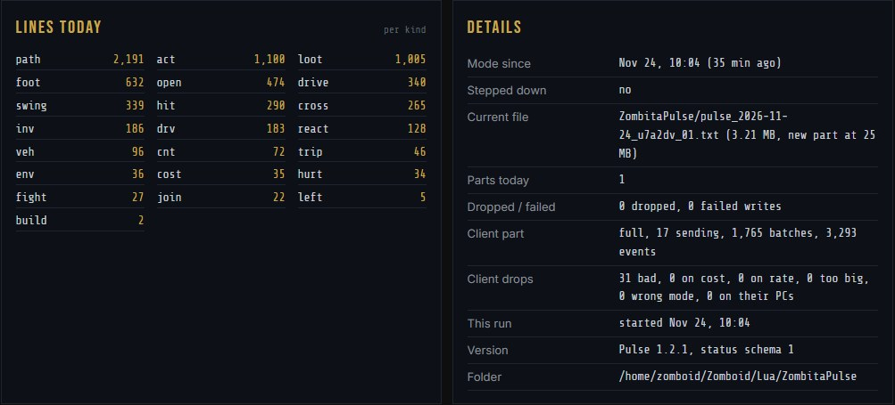

Learning from real players: Zombita Pulse
Pulse is a separate server mod, with a small part on each player's PC, that records how real players move, search, fight and drive on my server, so the NPCs can learn to act like players.
What it records. Walking four times a second, every door, window and fence crossed, timed actions like eating, cooking and building, items taken and stored, each hit and a summary of each fight, and driving. While a zombie is within 6 tiles it also records footwork ten times a second: position, facing, and where the nearest zombies are. No keys, mouse or screen are recorded.
Nobody is recorded by name. Each player gets a code made from a secret that lives only in the server's memory. The secret changes every 24 hours and at every restart, so a code only links one person's data for that stretch. No Steam IDs, character names, chat or IPs are kept, and players agree to it in the server's terms. Pulse runs inside a cost budget and can be switched between full, light and paused from the website.
The analyzer. A Python package turns the logs into training tables, proven routes and crossings for the NPC walker, a driving map, fight styles, and models for the Python brain. A newly trained model only replaces the old one when it does better on the same held-out players.
The fight forest. The first model in the mod picks an NPC's next footwork move against zombies from 8 choices: back, forward, left, right, shove, stay, swing or turn. It is a boosted forest of 160 trees, compiled from Python into plain Kahlua Lua tables. The tests check, row by row, that the Lua picks exactly what the Python model picks. Tested on 51,856 fight moments from players it never saw, it picks the move the real player made 72.6% of the time, with its mix of moves within 3.6% of the players' mix. Set to weigh every move equally, its balanced accuracy is 0.57, where chance is 0.125.
-- ZNS_FightTree.decide(f): a boosted forest made by pulse_analysis.forest_lua (160 trees, 8 classes). -- Held-out (51856 test rows): with PRIOR_W 0.50 the right move 0.726, move mix within 0.036 of the players'; -- PRIOR_W 0: balanced accuracy 0.570 (chance 0.125). -- returns one of: back, forward, left, right, shove, stay, swing, turn -- GENERATED: do not edit, retrain. Kahlua-safe: tables, loops and if only, no main-body locals.
server/ZNS/ZNS_FightTree.lua (line breaks added). The file ships with PRIOR_W 0.5.
